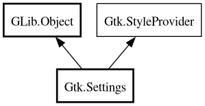

Settings
Object Hierarchy:

Description:
[
CCode ( type_id =
"gtk_settings_get_type ()" ) ]
public class Settings :
Object,
StyleProvider
Content:
Properties:
Static methods:
Creation methods:
Methods:
Inherited Members:
All known members inherited from class GLib.Object
All known members inherited from interface Gtk.StyleProvider